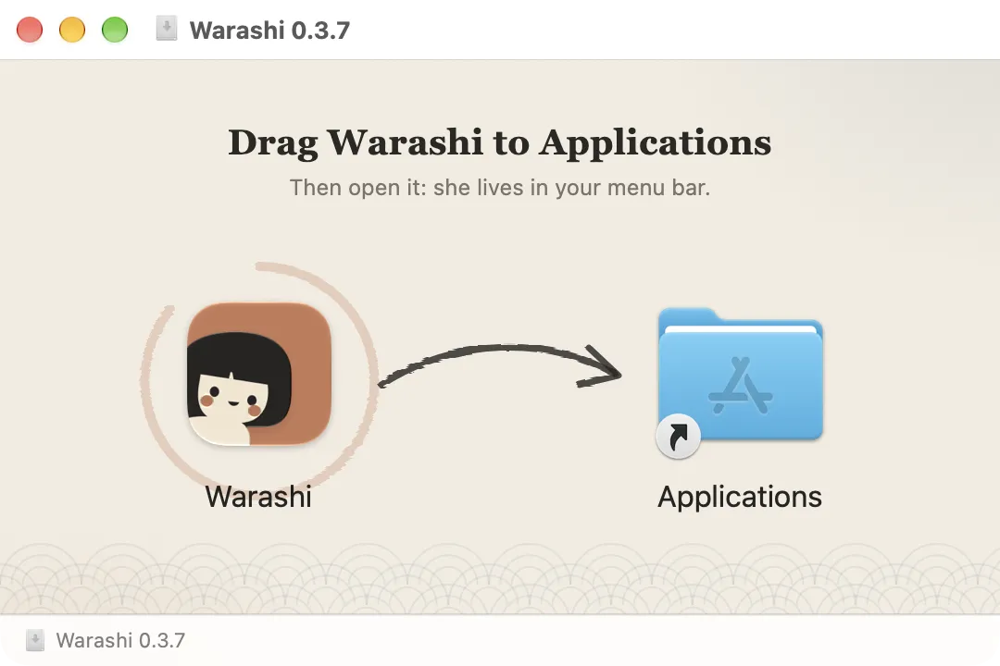
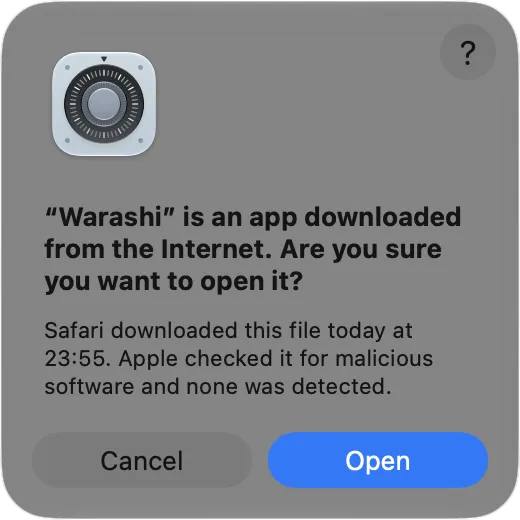

安装大约需要一分钟。你需要一台搭载 Apple 芯片（M1 或更新）并运行 macOS 26 或更高版本的 Mac。不确定？请选择苹果菜单 › 关于本机：那里会显示芯片和 macOS 版本。
- 下载 Warashi
点按 warashi.app 任意页面顶部的下载。浏览器会保存
Warashi.dmg，通常存放在“下载”文件夹中。它大约 15 MB。 - 打开磁盘映像
在“下载”文件夹中双击
Warashi.dmg（或在浏览器的下载列表中点按它）。会打开一个窗口，里面有 Warashi 和“应用程序”文件夹。
磁盘映像：将精灵拖到“应用程序”上。 - 将 Warashi 拖到“应用程序”
将 Warashi 图标拖到应用程序文件夹上。拷贝完成后，你可以关闭窗口并推出磁盘映像（访达边栏中“Warashi”旁的 ⏏ 按钮）。
- 打开 Warashi
打开“应用程序”文件夹并双击 Warashi。由于它来自互联网，macOS 会询问一次是否打开。Warashi 已签名并经过 Apple 检查，因此请点按打开。

macOS 只会询问一次。Warashi 已经过 Apple 检查，可以放心点按“打开”。 - 浏览欢迎导览
欢迎导览会打开。它共有六个简短页面：每页的作用见欢迎导览。
- 在菜单栏中找到精灵
Warashi 位于屏幕右上角的菜单栏中：一个小精灵，旁边有一个实时数字。随时可以点按它。

精灵和一个数字，这里是 CPU。
补充说明：Warashi 在后台运行时没有程序坞图标。它的窗口打开时，会出现在程序坞和 ⌘-Tab 切换器中，因此不会找不到。
如果出现问题
- 提示“无法打开 Warashi”或 App 已损坏：请从 warashi.app 重新下载，并打开新下载的副本。只从 warashi.app 下载 Warashi。
- 你的 Mac 提示不受支持：Warashi 需要 Apple 芯片和 macOS 26。不支持 Intel 芯片的 Mac。
- 看不到精灵：菜单栏项目过多时，它可能被藏到刘海后面。见我在菜单栏中看不到 Warashi。
更多内容见疑难解答，或发送电子邮件至 adam@warashi.app。